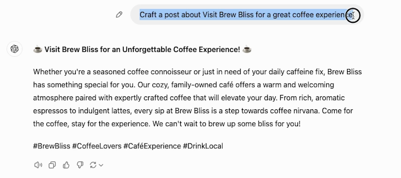
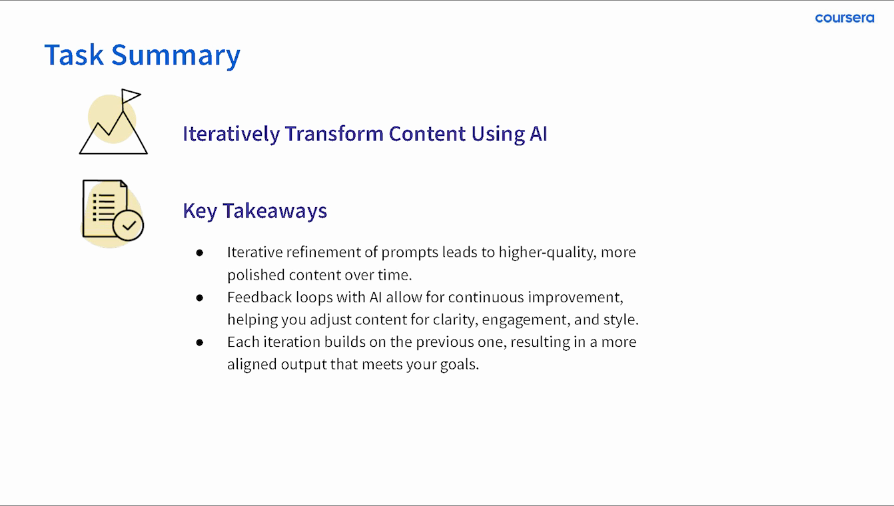

Coursera · Guided Project / AI EDUCATION · ENABLEMENT
Teach the habit behind a useful prompt.
A published beginner project uses a familiar content task to teach specificity, comparison, and iteration—giving learners a process they can practice.

THE PROBLEM
What needed to become clearer?
Beginners need more than an example prompt to copy. They need a way to decide what context to add, how to inspect the result, and what to change when it does not serve the task.
MY CONTRIBUTION
Turn the task into a usable workflow.
I created and taught ChatGPT 4o for Beginners: Create Social Media Content, a one-hour guided project. I used a concrete content-creation task to walk learners through making prompts more specific, comparing outputs, refining drafts, and organizing a weekly content calendar.
DECISION 01
Give the learner a task they can recognize.
Creating a social post provides a concrete starting point: there is an audience, a message, and a purpose. The lesson begins with a simple café example and an initial AI-generated draft, giving learners something specific to inspect and revise.

DECISION 02
Make revision the activity.
The lesson goals ask learners to create a draft, make iterative refinements, and examine how each change affects quality and alignment with the goal. The practice is in comparing and revising, so learners have a way to continue when the first result is only a starting point.
DECISION 03
Leave a process the learner can repeat.
The task summary brings the activity back to a repeatable cycle: draft, review, refine, and check against the goal. The wider project carries the work into a weekly content calendar, connecting prompt practice to an organized output.

OUTCOME & REFLECTION
A public learning experience people can work through.
The guided project is published on Coursera with my instructor attribution and more than 4,700 enrollments as of September 2026. It gives beginners a hands-on sequence for developing and revising AI-assisted content.
Teaching makes the small decisions visible. A learner needs to see what to look for in an answer and how to make the next revision purposeful.
The next question I would test
I would assess transfer with a new task: can a learner define useful context, identify a weak result, and explain a revision without following the original example? Enrollment alone does not answer that question.
Official Coursera project page and original 2024 lesson recordings. Stills preserve the historical interface and course credit; they are excerpts of my teaching material. Enrollment is not completion or a measure of learner improvement.